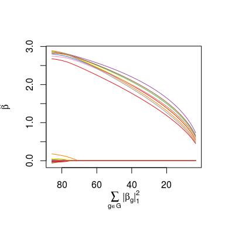

The Exclusive Lasso
This package implements the ExclusiveLasso penalty of Zhou, Jin, and Hoi (2010) and Campbell and Allen (2017) for generalized linear models.
$$\text{arg min}_{\beta} \frac{1}{2n} \|y - X\beta\|_2^2 + \lambda \sum_{g \in \mathcal{G}} \frac{\|\beta_g\|_1^2}{2}$$
This penalty is the “converse” of the group lasso, encouraging selection of a single variable in each group. See Campbell and Allen (2017) for a thorough discussion of this estimator and its properties.
The package provides efficient inexact proximal gradient and coordinate descent schemes to solve exclusive lasso problems. The interface is similar to that of the popular glmnet, ncvreg, and grpreg packages.
Installation
The current working version of the package can be installed from Github:
library(devtools) install_github("DataSlingers/ExclusiveLasso")
Usage
We begin by simulating a small data set with simple structure:
library(ExclusiveLasso) n <- 200 p <- 500 groups <- rep(1:10, times=50) beta <- numeric(p); beta[1:10] <- 3 X <- matrix(rnorm(n * p), ncol=p) y <- X %*% beta + rnorm(n)
We fit the exclusive lasso to this data set, using a user-specified group structure:
exfit <- exclusive_lasso(X, y, groups) print(exfit) #> Exclusive Lasso Fit #> ------------------- #> #> N: 200. P: 500. #> 10 groups. Median size 50 #> #> Grid: 100 values of lambda. #> Miniumum: 0.04212819 #> Maximum: 4.212819 #> Degrees of freedom: 1.941015 --> 39.28066 #> Number of selected variables: 10 --> 41 #> #> Fit Options: #> - Family: Gaussian #> - Intercept: TRUE #> - Standardize X: TRUE #> - Algorithm: Coordinate Descent #> #> Time: 0.162 secs plot(exfit)

As we can see, for this very simple problem, the exclusive lasso picked out the true variables (though the standard lasso would have done as well here).
The cv.exclusive_lasso function can be used to select the tuning parameter λ, though as Campbell and Allen (2017) note, standard cross-validation does not perform particularly well for this problem, and model selection according to BIC / EBIC with a group-thresholding step yields superior results. To facilitate model selection by BIC / EBIC, an unbiased estimate of the degrees of freedom is calculated.
In addition to standard linear regression, the ExclusiveLasso package also implements logistic and Poisson regression. See the package vignette for details.
Acknowledgements
MW was supported by NSF Graduate Research Fellowship No.1450681.
FC was supported by NSF Graduate Research Fellowship No.0940902.
GA acknowledges funding from NSF/DMS-1264058 and NSF/DMS-1209017.
References
Campbell, Frederick, and Genevera I. Allen. 2017. “Within-Group Variable Selection Through the Exclusive Lasso.” Electronic Journal of Statistics 11(2): 4220–4257. doi:10.1214/17-EJS1317.
Zhou, Yang, Rong Jin, and Steven C.H. Hoi. 2010. “Exclusive Lasso for Multi-Task Feature Selection.” In AISTATS 2010: Proceedings of the Thirteenth International Conference on Artificial Intelligence and Statistics, edited by Yee Whye Teh and Mike Titterington. JMLR. http://proceedings.mlr.press/v9/zhou10a.html.